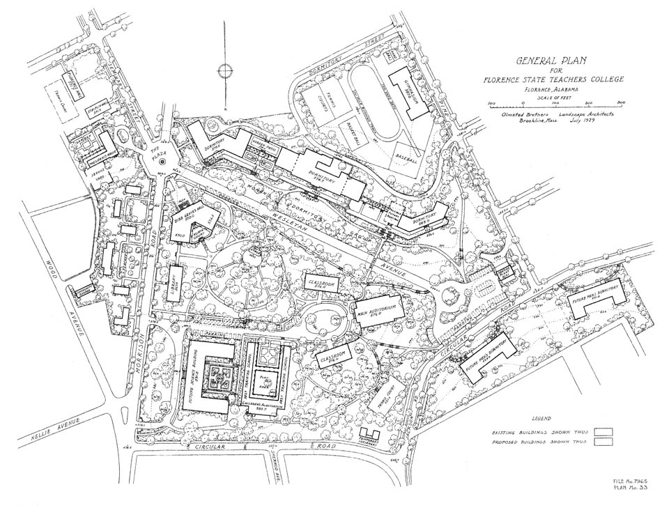

Planning
Alabama's campus building efforts of the late 1920s resulted from a reinvigorated interest, since 1919, in improving education in the state. That year, a United States Bureau of Education commission examined Alabama’s public schools and reported some shocking findings. Alabama trailed most or all other states in the amount spent on education per capita, the length of the school year, and the average salary of teachers. The literacy rate was low, as was school attendance. School facilities in rural counties were particularly rudimentary, unsanitary, and generally poorly equipped for teaching. In response to the commission’s report, Governor Thomas E. Kilby ordered emergency appropriations for schools, and launched a successful campaign in the state legislature to raise taxes. In accordance with the commission’s recommendation, the state formed a Board of Education.
Education was an important issue in the 1926 gubernatorial race. Bibb Graves’ emphasis on equal education opportunities for rural (white) children, and promise of a lengthened school term (to seven months his first year in office, to be increased to eight months) appealed to voters.The 1927 legislature, which the Montgomery Advertiser called “one of the most progressive and tolerant in the state’s history,” generally supported the governor’s various education proposals. Shortly after Graves’ inauguration, the legislature authorized an emergency appropriation of $600,000 that funded the promised seven-month school term. A revised education code adopted by the legislature organized the state’s education laws. A bill designed to raise revenue by taxing mining, railroads, power, and other commodities was passed by the legislature in July 1927. The state expected to collect $5 million to $10 million from this tax, and the majority of funds would be directed towards education. Now the governor concentrated on obtaining approval for his comprehensive education reform proposal: the Unified Educational Program (UEP). The Alabama House approved the measure in August with only one dissenting vote, and the Senate approved the bill a week later. The UEP made available $20 million dollars over four years for education, at the time the largest appropriation of this kind ever made in Alabama. Passage of the UEP provided for the permanent extension of the school year to seven months, equalization of urban and rural school conditions, higher standards of teacher training and increased pay for teachers. In 1930, the state’s normal schools had adopted a four-year, senior college-level curriculum, and officially became known as “teacher’s colleges.” In addition, the UEP authorized an increase in funding for the improvement and expansion of school facilities. The colleges and normal schools alone were to receive $3.9 million during 1928-1931 for capital improvements. The program included every one of the state’s institutions of higher learning, except for the normal school at Daphne. This school was the smallest teachers’ college, and since its relocation was being considered Daphne was excluded from the building program.
Yet the Governor and his backers in the legislature felt the amount appropriated for public school building programs was not adequate to meet the significant needs of the state. To remedy this situation, the legislature passed a bill in August which authorized a constitutional amendment to permit a $20 million bond issue. Voters would decide the fate of the amendment in a January 10, 1928 referendum.
Supporters of the amendment emphasized that the bond issue would not involve a tax increase. One dollar of the state’s two and a half dollar ad valorem tax would be diverted from the state’s general purpose fund into a separate account to pay the interest and principal on the bonds. If the amendment was approved, the building funds stipulated by the UEP would be used instead to pay expenses on the bonds. According to the amendment, the state’s colleges and normal schools would share $6.3 million, and the remainder of the $20 million would be divided among the counties.
Powerful business interests aligned against the proposed amendment, and the Ku Klux Klan backed the conservatives. Bond opponents argued that additional spending on school buildings was unnecessary and urged citizens not to allow the state to take on additional debt. Moreover, they refused to believe that passage of the amendment would not result in a tax increase, and pointed out that the state’s general fund needed to be replenished somehow. Although Graves and R.E. Tidwell, the State Superintendent of Education, traveled the state speaking on behalf of the bond issue, the measure was soundly defeated by the voters. After the election, Graves and Tidwell vowed to continue Alabama’s educational progress with the resources available.
During their 1928 annual meeting, the Alabama Board of Education began making definite plans for the building program. At the start of the bond issue campaign, state officials decided that before beginning construction, they would hire a landscape engineer to create a long range expansion plan for the colleges and normal schools, in order to “do away with haphazard building methods.” Though the bond issue had failed, the group still authorized the employment of Olmsted Brothers Landscape Architects to perform a preliminary study of Alabama’s campuses. At the same meeting, the Board voted to retain the services of architecture firm Warren, Knight and Davis.
The Governor and the Board may have been drawn to Olmsted Brothers in particular because of their prestigious reputation. The firm was the largest and most famous landscape architecture practice in the world, a legacy of Frederick Law Olmsted, who is considered the founder of the profession. Olmsted, Sr. is best remembered for his plans of New York’s Central Park, the 1893 World’s Fair in Chicago, and the Biltmore Estate in Asheville, North Carolina. He designed many college campuses, including the original plan for Stanford University. After the elder Olmsted’s retirement, his sons John Charles Olmsted and Frederick Law Olmsted, Jr. continued the family business. The younger Olmsteds also made significant contributions to the profession. Frederick taught landscape architecture at Harvard, which had the first such degree program in the country. He also served on the McMillan Commission, which proposed many improvements to Washington, DC’s city plan, including a redesign of the Mall and Capitol Grounds. John created the plan for the 1909 Alaska-Yukon-Pacific Exposition in Seattle, and the grounds were incorporated into the University of Washington campus after the fair closed. The brothers helped found the American Society of Landscape Architects, and Frederick served two terms as the organization’s president. Olmsted Brothers received commissions from across the country, and maintained offices in Massachusetts and California. By the time John died in 1920, the firm had completed over 3500 projects.
The firm had previous experience working in Alabama. In 1889, Governor Thomas Seay asked Frederick Law Olmsted, Sr. for his advice regarding beautification of the State Capitol. Olmsted was not hired to implement his ideas, however. Olmsted, Jr. designed the original 1908 plan for the Woman’s College of Alabama’s Montgomery campus, and at the same time created plans for the Montgomery Country Club and several of the city’s prominent businessmen. In 1925, the firm created a master plan for the Birmingham Parks System.
Since at least January 1928, Governor Bibb Graves had been in contact with Olmsted Brothers regarding the development of a new plan for the State Capitol complex. In June, Graves requested that an Olmsted representative visit each of the state’s colleges, in order to estimate the cost of preparing new campus plans. The total cost of the preliminary site visits was $1,763.69, an amount that was divided equally between the nine colleges and the Capitol Building Commission.
On August 1, 1928, the Alabama Board of Education signed a contract with Olmsted Brothers on behalf of the five state normal schools and the A&M Institute. The firm would create layout plans and make recommendations regarding the placement of buildings and complementary features such as roads, walks, lawns, and parking areas. Olmsted Brothers would also provide landscaping plans and plant lists and give advice regarding grading and engineering work and acquisition of additional property. The firm was contracted for a period of two years, and each institution would pay $1,500 for planning work, plus an estimated $1,500 apiece to cover the cost of travel, assistants, drafting, and printing. The Board of Education was obligated to consult Olmsted Brothers before allowing any variations to be made to the finished plans. Henry J. Willingham, President of the Florence State Normal School, was particularly enthusiastic about the project. He wrote to the governor, “It seems to me this is about the best money that can be spent in laying the right ground-work and in formulating plans for a greater institution in the years to come.”
Obtaining the agreement of the Alabama College for Women, Alabama Polytechnic Institute, and the University of Alabama was more difficult. In early July, Olmsted Brothers asked for the governor’s help in order to close the deal with the remaining institutions, and the firm repeated its request a month later. Graves wrote to the school presidents, urging them to “accept the proposition, and... take all steps possible to expedite this development.” Bradford Knapp, president of Alabama Polytechnic, was hesitant to sign an agreement that estimated $3,000 for travel and other expenses, but did not set an absolute limit. Somehow the matter was settled, and the contract was signed in late August. Alabama College trustees did not vote to approve their contract with Olmsted Brothers until October. Each institution would pay the firm $6,000. Auburn Polytechnic agreed to pay $3,000 in professional fees, and an estimated $3,000 for additional expenses. Presumably, Alabama College’s charges were distributed the same way.
The University of Alabama was the only institution that did not hire Olmsted Brothers for their planning work. At the May 1928 annual meeting, President George H. Denny and the Board of Trustees resolved to “proceed with strict economy” regarding expenditures of the school’s appropriation, and Denny wrote to Olmsted Brothers in July seeking clarification about how the school’s fee would be used. Hill Ferguson, vice president of a Birmingham banking and real estate company and longtime member of the Board of Trustees, believed that hiring a landscape architect, especially one from out of state, to create a comprehensive master plan was a waste of time. He argued that campus planning was best done in stages, and a piecemeal approach was more effective than the creation of a single, long-term plan. Ferguson praised the work Birmingham landscape architect William H. Kessler (with whom he had collaborated on various housing developments) had done for several Alabama schools, in contrast to the impractical proposals of out-of-state firms, which frequently called for demolition of campus buildings. During the building program, the University of Alabama used a plan created for the school in 1925 by Kessler and his partner, Louis Schillinger.
Two of the buildings constructed on the University of Alabama campus during the building program—and all of the buildings constructed at the other eight schools during this time—were designed by the firm Warren, Knight and Davis. The three architects had worked in Alabama since in the early 1900s and formed their Birmingham-based practice in 1921. The firm’s commissions included a wide variety of projects, including homes, skyscrapers, theaters, and churches throughout Alabama and the Southeast. Robert Jemison, a Birmingham real estate developer who worked with Ferguson on various land development schemes, was a frequent client. Warren, Knight and Davis was often called upon to design homes for Birmingham’s most prominent businessmen, including Jemison.
The firm also cultivated relationships with various colleges. Warren, Knight and Davis designed several buildings for the University of the South in Sewanee, Tennessee. William Warren, and later Eugene Knight, focused on winning commissions from Alabama schools. With Kessler, Warren developed a campus plan in 1913 for the Alabama Girls Technical Institute in Montevallo. In 1921, Warren designed a library for the school. Warren and Davis both graduated from Alabama Polytechnic Institute, and in 1907 Warren won a competition to design Smith Hall, the school’s dining hall. In 1910, Warren collaborated on a plan for the ATO fraternity house at Auburn. The association begun by Warren was continued by Davis, and the firm completed designs for five more buildings at the school before 1928, including Ramsay Engineering Hall. Because of their reputation in Alabama, and experience with campus design work, every one of the nine colleges involved in the campus expansion program hired Warren, Knight and Davis to design new structures. William Warren was named “architectural advisor and critic” specifically for the program.
Both firms hired to handle the architecture and planning for Alabama’s campus expansion program had thriving businesses and enjoyed good reputations in their respective disciplines, but this was only one instance of their collaborative relationship. In 1945, Davis wrote that his firm had 25 years of experience with Olmsted Brothers, which indicates that the two firms worked together prior to 1928. While involved with the campus expansion program, Olmsted Brothers created a new plan for the State Capitol complex, for which Warren, Knight, and Davis designed three buildings. As we will see, the two firms were retained by individual Alabama colleges throughout the 1930s and 1940s, and they enjoyed a successful professional relationship. John Schnorrenberg, the author of Remembered Past, Discovered Future: The Alabama Architecture of Warren, Knight and Davis, 1906-1961, even points out how one of Warren’s skyscrapers incorporates the Chicago School style of architecture inspired by the 1893 World’s Fair in Chicago—which the elder Frederick Law Olmsted helped design—and Washington D.C.’s McMillan Commission—of which Frederick Law Olmsted, Jr. was a member. From time to time, correspondence regarding their work on Alabama’s campuses reveals a friendly relationship between members of the two firms. They discussed potential clients, congratulated each other on their business accomplishments, and sometimes socialized when one of the landscape architects came to Alabama.
As mentioned earlier, Olmsted Brothers visited Alabama’s campuses in June 1929, to prepare for creation of the new plans. A team of education experts also surveyed the schools, and submitted their own recommendations regarding building requirements to the Board of Education. In addition, the governor encouraged the college presidents to submit a summary of their immediate and future needs to Olmsted Brothers. Graves wrote to G.W. Brock, president of Livingston Normal School, “Take your time on this and do it in a big way.” In May 1927, a group of students at Alabama Polytechnic sent the governor a petition that included complaints about the school’s facilities, including the lack of space for Physics, Chemistry, and Architecture classes. The needs mentioned in the student petition, Auburn president Bradford Knapp’s written list of requests to Olmsted Brothers, and findings from the campus visits by the educators and landscape architects were incorporated into the plans created for each school.
Frederick Law Olmsted, Jr. was not personally involved in the Alabama campus expansion program, and his initials only appear on collections notices related to the work. John Charles Olmsted had died in 1920, and in 1928, Olmsted, Jr. was approaching retirement. In 1934, Olmsted Jr. reduced his involvement in the firm to an advisory role. Though letters to clients were nearly always signed “Olmsted Brothers”—part of their commitment to emphasize the work of the firm as a whole—initials on letters regarding the campus expansion project indicate they were written by partner James F. Dawson, or his assistant, Leon H. Zach. Olmsted Brothers designers worked on many projects simultaneously, and traveled often. In general, Dawson was responsible for the firm’s work in the South and Midwest, and on the West Coast.
Florence State Teachers College, Florence
University of North Alabama
{kind=link}
From 1928-1930, three major structures were added to the campus of Florence State Teachers College: a heating plant, auditorium for the teacher training practice school (now known as Kilby Hall), and a classroom and administration building named Bibb Graves Hall. (Department of Education had previously adopted a resolution stating that all future state-funded buildings (limited to one on each campus) at Alabama’s public colleges should be named for the governor in office during the building’s construction. There was a Bibb Graves Hall planned or built at each of the nine schools during this building program.) Other facilities needed by the school at this time included a gymnasium, library, President’s Home, and additional dormitories, and these were added after the school’s building program resumed in the late 1930s. Since the school was located “in-town,” the Florence campus was relatively compact, and most of the existing and proposed buildings on the Olmsted Brothers plan are located within or just outside an area enclosed by Morrison Rd, Circular Rd, and Wesleyan Avenue. During 1928-1929, school president Henry Willingham arranged the acquisition of several adjacent lots, including one just east of Morrison Road. During their first visit with school officials in July 1928, Olmsted Brothers had recommended the purchase of this land, and a year later—after months of “quiet and secret” negotiations—the transaction was complete. At the time, the school planned to build several “rooming houses” on this property, although it is not clear if this was done. In 1939, a dormitory was built on the site, and this building was named in honor of President Willingham after his death.
According to the master plan, a new science building was proposed for the land occupied by Wesleyan Hall and its annex, though these plans were never mentioned in correspondence between Olmsted Brothers and the school. Completed in 1856, Wesleyan Hall was the oldest building on campus, and predated the creation of the normal school at Florence. The Wesleyan Annex was built in 1909, and had been designed by William Warren. Evidently, any plans for demolition of these structures were abandoned, because the Wesleyan buildings still stand today.
Initially, Olmsted Brothers proposed that Wesleyan Avenue should be extended to connect Morrison Avenue and Circular Road. But the women’s dormitory (named O’Neal Hall in 1930) was located on this street, and Willingham wanted to protect the inhabitants of this building from “passers-by, who merely wish to call attention to themselves in a manner annoying and thus escape when pursued.” To reduce the amount of through traffic on this street and discourage disruptive behavior, Willingham proposed a “turn-around” at the western end of Wesleyan Avenue. Olmsted Brothers agreed with the President’s suggestion, and the feature was completed in 1928. Today, the Opler Street Clock is located in the center of the circle.
Olmsted Brothers planned another distinctive campus feature at the intersection of Wesleyan Avenue, Morrison Road, and Seminary Street, in front of the proposed Bibb Graves Hall. The octagonal plaza would “do more for setting off Bibb Graves Hall and for making it assume its rightful importance, than any other one thing shown on your plans,” wrote Leon Zach. The firm feared that such an embellishment would be forgotten in the rush to construct needed academic and housing space, and Zach urged Willingham to put the plaza’s curbs and pavements in place even if the project could not be completed at that time. In 2002, a pedestrian plaza was built at this location, with a fountain in the center and a gateway entrance that frames Bibb Graves Hall.
From the start of the building program, the construction of an amphitheater was a priority for Willingham. The theater would be located in the center of campus, on the site of an existing stage, and serve as a memorial for six students who had died in World War I. Until April 1931, eight months after the Board of Education’s contract with Olmsted Brothers had ended, Willingham consulted with the firm regarding plans for the amphitheater, as well as the possibility of constructing a viaduct or suspension walkway that would cross Wesleyan Avenue. By this time, construction at other schools had been halted due to lack of funds, and the building fund at Florence had been depleted for almost a year. Though he acknowledged the state’s precarious financial situation, Willingham indicated that he had committed to a tentative plan for the theater, and seemed optimistic that the project would proceed. The amphitheater was completed in 1934.
In September 1930, Willingham praised the Olmsted Brothers for their work on the campus plan: “...I think you did us an extraordinarily fine piece of work at Florence. We are delighted with it.” Later, however, the firm had trouble collecting payment from Florence, particularly for work done there after August 1930, when the state contract expired. In a February 1932 letter, Willingham complained about the high fees charged by Olmsted Brothers, though he conceded, “...we have a much more beautiful plant, a much better arranged one, than it would be if we had not had their advice as to locations and general appearances.”
Jacksonville State Teachers College, Jacksonville
Jacksonville State University
{kind=link}
In 1928, the college at Jacksonville was most in need of a new administration building, a library, a cafeteria, and additional dormitories. These structures, along with other prominent proposed buildings, were located in a neat linear arrangement in the center of the Olmsted Brothers plan for the school. A large lawn separated the classroom and administration building from an amphitheater, with other buildings on either side of the open space. Winding roads would move traffic through the rest of the campus, and athletic fields and faculty residences were planned for the perimeter of the property.
Olmsted Brothers was particularly proud of this plan, and Leon Zach called it one of the firm’s most successful Alabama campus designs, “by reason of the adequate space and commanding site for the main buildings.” Years later, when Olmsted Brothers were hired by school officials to provide planning advice, one of the firm’s employees wrote that “Jacksonville happens to have been more endowed by Nature than the other schools.” After the school’s president, C.W. Daughette, informed the firm of his plans to move the proposed heating plant to the southwest corner of the property (since this location was close to a railroad line and would be convenient for receiving coal shipments), Leon Zach urged him to reconsider. The plant’s tall smokestack would be visible throughout the campus, Zach wrote, destroying the property’s lovely views. He defended the location proposed by the firm, and the school followed his recommendation.
The classroom and administration building (Bibb Graves Hall) and a dormitory for women (Daughette Hall) were constructed during the building program, and are the oldest significant structures at the school today. The campus that grew up around them, however, only vaguely resembles the Olmsted Brothers layout.
Livingston State Teachers College, Livingston
University of West Alabama
{kind=link}
The school at Livingston was the smallest teacher’s college included in the building program, with 327 regular students. A report made by the Olmsted Brothers during their first visit to the school stated that only two existing buildings on campus should be preserved: a brick dormitory (Webb Hall) and the teacher training practice school (now known as Foust Hall). The firm’s plan for Livingston called for two additional dormitories, an auditorium and classroom building, a library, an auditorium for the practice school, and housing for the president and faculty. These buildings would join the brick dormitory and the practice school in the center of campus, with athletic facilities located to the north. An amphitheater and overlook garden were planned for a natural area on the west side of the property.
Construction of the auditorium and classroom building (Bibb Graves Hall) and a dormitory named after the school’s president, Dr. G.W. Brock, took place during the building program. However, Brock was extremely unhappy with the grading of these buildings, and this issue dominates the Olmsted Brothers correspondence regarding Livingston. Bibb Graves Hall had been constructed 50 feet north of where the landscape architects had specified, and in order to build at this location, five feet of soil had to be removed, and as a result, the structure appeared to be sunk into the ground. The new dormitory had been set slightly below ground level as well.
Brock was livid about the money that had been wasted removing soil from these sites, and was especially upset about the appearance of Bibb Graves Hall. In one letter to Olmsted Brothers, Brock wrote, “...the grading of this building spoiled all your plans... mutilating the whole landscape.” He went on to call the school’s landscaping “a consummate failure,” and declared that the firm should compensate the school for the unnecessary grading expenses. Brock claimed that inaccurate measurements by Olmsted Brothers were responsible for the mistake, and told the firm, “...your whole job is a mess and nobody on earth can follow your plans.” However, James Dawson, the landscape architect responsible for the firm’s work in Alabama, insisted that his plans were accurate and clear, and the location of Bibb Graves Hall must have been incorrectly staked out by the contractor.
A.F. Harman, the State Superintendent of Education, sent a team to Livingston to investigate the matter. Harman determined that the contractor, who marked the location of the new structure while the construction supervisor and Dr. Brock were present, was confused by the Olmsted Brothers plan and used the wrong building as a starting point to measure the location of Bibb Graves Hall. By the time the builders realized the mistake, the excavation had been completed and the foundations were already in place, so the decision was made to finish the building at that location.
W.W. Hill, who was president of Livingston from 1944-1954, complimented Olmsted Brothers for their work and expressed interest in hiring the firm. But Olmsted Brothers never created additional plans for Livingston, though they returned to many of the schools in Alabama they had originally worked with during the building program.
Montgomery State Teachers College, Montgomery
Alabama State University
{kind=link}
It seems that the college at Montgomery most needed a new auditorium, dining hall, classroom and administration building, and girls’ dormitory, since these structures are emphasized in correspondence between President H. Councill Trenholm and the two architecture firms. The girls’ dormitory, named in honor of Bibb Graves, and the classroom and administration building, known as Paterson Hall, were built in 1928. Plans for a new dining hall reached at least the preliminary stage, since Warren, Knight, and Davis sketched plans of the structure. There was much discussion in letters between Olmsted Brothers and Trenholm regarding its location, and it is not clear which site they finally settled on. It does not appear that a dining hall was built during this period’s expansion program, however.
Also included on the September 1929 master plan were a Physical Education building and a Gymnasium, joined to form an L-shape. An amphitheater and stage was extended from the area between the two buildings, and an outdoor swimming pool was located just west of the theater. Further to the west were most of the school’s athletic facilities.
An influential feature of the 1929 layout for the school at Montgomery is the two quadrangles that are shown side-by-side. On the Olmsted Brothers plan, three classroom buildings, a library, a classroom and administration building (Paterson Hall), and an auditorium enclose a lawn area crossed by sidewalks. This area, now known as the Academic Mall, began to be developed by the school in 1965, and today Paterson Hall is joined in the Mall by other academic buildings and the University Center. In the 1929 plan, the classroom and administration building and one of the classroom buildings from this arrangement form one side of the second quadrangle, framed on the other sides by a dormitory (Bibb Graves Hall), the dining hall, and the physical education building. Jackson Street enters campus through the center of this group. Though the dining hall and physical education building from the plan were replaced by different structures, the intended effect was achieved, and visitors today see Bibb Graves Hall at the end of the wide avenue as they enter through the Jackson Street gate of Alabama State University.
The organization of building groups and placement of streets and walkways on the present campus roughly follow the plan drawn by Olmsted Brothers, although it is not clear how much of this infrastructure was built prior to 1928. It seems that most of the structures already existing at the school were confined to a single block on the north side of campus.
In February 1930, Olmsted Brothers sent Trenholm planting plans for Bibb Graves Hall and Paterson Hall. E.T. Mische summarized his firm’s proposal: “As a whole a rather sumptuous treatment of the property is contemplated with a liberal use of azaleas and such other flowering plants as are adapted to the climate and soil in your locality.” Trenholm responded that the school was unlikely to begin planting that year due to the financial crisis, but plans were still underway to begin implementing the firm’s grading recommendations. Mische met with Governor Graves in April, and stressed the importance of soil care and implementing certain street and walkway improvements, even though he was aware that the school’s funding was depleted.
Troy State Teachers College, Troy
Troy University
{kind=link}
In 1922, Troy Normal purchased 275 acres southeast of Troy, and began to prepare for the school’s eventual relocation to the new site from their old campus in downtown Troy. The next year, President E.M. Shackelford contacted Olmsted Brothers to inquire about the possibility of hiring the firm to create a plan for the property. Shackelford wrote that the site contained “a wooded area of about twenty acres, in which two bold springs exist. The main campus... would be on a plateau of about forty acres covered with pecan trees, some of which are more than thirty years old.” Olmsted Brothers responded that they were interested in the job, and provided information on their procedures and charges, but they did not do any work for Troy Normal until 1928.
Development of the new site started in 1923, the year construction began on Kilby Hall, a practice school used for teacher training. Students and student teachers traveled to the practice school by bus until the college moved to its new location in 1930. Before 1923, another architect had created a plan for the new campus at Troy, and Kilby Hall had been built according to this layout. In his book First Fifty Years of the State Teachers College at Troy, Alabama, Shackelford wrote that Olmsted Brothers did not approve of their predecessor’s plan, and proposed that Kilby Hall should be “scrapped” and replaced with a different building. Financial considerations made this idea impractical, however. Kilby Hall is a single-story Spanish-style building with a stucco exterior, and it did not match the red brick Colonial-style buildings that Warren, Knight and Davis had designed for the campus. Olmsted Brothers valued architectural unity throughout a campus, and it may have been Kilby Hall’s distinctive appearance that earned the firm’s disdain.
The only other manmade feature on the property at the time of the expansion program was a swimming pool located in a wooded area on the east side of the campus. It was fed by a spring running through the pool, and supplemented with artesian water provided by the city. On the Olmsted Brothers plan, the pool is surrounded by an outdoor theater, with the stage on one side of the water feature, and a seating area on the other.
A slope ran horizontally through the center of the campus, and Olmsted Brothers placed the school’s major buildings south of the break in topography. On the master plan, only athletic fields and small outbuildings are located north of this divide. Except for the physical education building, which was set next to a large athletic field, the school’s main structures were concentrated into three groups. The three buildings of the Girls’ Dormitory Group faced an open lawn, with gardens in the front or back of each structure. In the Boys’ Dormitory Group, four structures surrounded two tennis courts.
Located between the two dormitory groups, the Academic Group consisted of a classroom and administration building, library, science building, and two teacher training buildings, surrounding an open lawn. Normal Avenue, which cut through the south side of campus, formed one side of this quadrangle. An auditorium and plaza were planned for the opposite side of the avenue, and would face the classroom and administration building. The landscape architects were particularly excited about the rectangular plaza, and told Shackelford, “...we believe that you could do nothing of greater advantage to the school as a whole, nothing that would set off the classroom building better, that to construct the plaza....” As at Florence, where Olmsted Brothers had also proposed the construction of a plaza in order to showcase a major building, the firm feared that the feature would be forgotten. Leon Zach urged Shackelford to use part of his appropriation to lay the curbs that would outline its shape, even if paving, landscaping, and installation of the balustrade surrounding the area had to be delayed.
In his book, Shackelford praised Mische’s planting plan, and called it “the finest piece of work of its kind that I ever saw.” From his description of landscaping efforts, it seems that the planting done at Troy was much more extensive than at other schools involved in the building program, and was made possible by donations of plants by individuals and companies.
Only two structures were built at Troy during the expansion program, but their completion meant the school could finally move to its new campus. The classroom and administration building, known as Bibb Graves Hall, and a Girls’ Dormitory, named in Shackelford’s honor, anchored the proposed Academic and Girls’ Dormitory Groups, respectively. Through the years, buildings gradually filled these quadrangles, though they did not serve the purposes specified in the 1930 plan. In 1935, the school planned to build the physical education building in the Academic Group, on the site that had been reserved for a library. Shackelford consulted Olmsted Brothers, who strongly objected to the change, since they believed that noise made by students in the adjacent playground would disturb those using the academic buildings. The firm’s advice was not heeded, and the physical education building, now known as Wright Hall, shares the quadrangle with Bibb Graves Hall.
Agricultural and Mechanical Institute, Huntsville
Alabama A&M University
{kind=link}
In 1928, the A&M Institute faced serious challenges. According to a report prepared by State Superintendent of Education R.E. Tidwell, 15 of the school’s buildings were “in a rather poor state of repair.” Both women’s dormitories (Palmer and Turner Halls) were “serious fire hazards,” and the addition of fire escapes had not eliminated “the feeling of impending danger to the lives of the students.” The school’s annual state appropriation of $15,000 was supplemented by federal funds under the terms of the Second Morrill Act of 1890, which had made the A&M Institute a land-grant college. However, the Act required that all institutions receiving federal funds under the program must offer a senior college-level curriculum. The A&M Institute had upgraded to the junior college level in 1919, which meant that it was accepting federal funds illegally. The Alabama Board of Education appointed J.F. Drake as president of the A&M Institute in 1927, and charged him with improving conditions at the school and solving the school’s financial problems. According to Richard D. Morrison in History of Alabama A&M University, the situation was so bad that after the previous president’s sudden removal, local residents were convinced that Drake had been sent to oversee the school’s closure.
Superintendent Tidwell’s report called for the following improvements of the A&M Institute’s campus, in order of importance: a Girls’ Dormitory, a Mechanical Arts and Trades Building, an Academic Building, miscellaneous repairs and replacements, and purchase of additional farmland. The total cost of the proposed developments was estimated to be $300,000, which was $150,000 more than the building appropriation the school would receive from the state over the next three years. Tidwell anticipated that the difference would be made up by private donations and a grant from the General Education Board in New York City.
Most of the buildings on the plan were located along a single roadway (now known as Buchanan Way) which made a loop at the western end of the campus. The road shown on the plan to have been in place before the building program began, and followed the curve of the hill on which the campus was located. The plan specified sites for girls’ dormitories to be constructed within the loop, and two future men’s dormitories on the eastern end of campus, on either side of the existing men’s dormitory, Grayson Hall, for which an addition was proposed. Between the two housing groups were the academic buildings, which included proposed Practical Arts and Mechanical Arts buildings, and an auditorium and classroom building. A Dining Hall shown on the plan just east of the girls’ dormitories was constructed during the building program, along with the classroom and administration building (known as Bibb Graves Hall) and a new girls’ dormitory (named Councill Hall). Before 1935, President Drake also arranged the purchase of 160 acres of farmland for the school, to be used for agriculture demonstrations.
The prospect of development on the A&M Institute’s campus helped the school secure an additional $10,000 in annual state funding, beginning in 1929. Despite the loss of much of this additional income after the onset of the Depression, construction of the new facilities helped launch a broader program of improvements for the school, in areas such as administration, faculty and student recruitment, and academic programs. In 1939, the Alabama Board of Education allowed the school to begin offering senior college courses.
Alabama College for Women, Montevallo
University of Montevallo
{kind=link}
In addition to the money provided by the Legislature, Alabama College had a building fund of its own, raised during their Million Dollar Drive campaign launched in 1924. Along with the school’s upgrade to a four-year curriculum during 1914-1918 and receipt of official accreditation in 1925, the drive was part of a concerted effort to improve the quality and stature of Alabama College. Interest in the school increased during the 1920s, and in 1928 the Trustees estimated that 350-400 women would be denied entrance to the school because facilities were not adequate to accommodate them.
Enough money had been raised during the Million Dollar Drive to build a new dorm (Ramsay Hall, 1925) and replace the President’s Home in 1926 (the previous one had burned in 1921). When the state’s building program began, a new high school and dormitory (Hanson Hall) were already under construction, using funds from the campaign. Trustees agreed on the immediate need for an auditorium, an administration building, a physical education and health building, and an additional dormitory. They were eager to expand, and believed that the Alabama College building fund—which contained the state appropriation as well as the remainder of the Million Dollar Drive donations—was “sufficient to erect more than the four buildings suggested but no further plans are ready to submit at this time.” President O. C. Carmichael wanted the new master plan to anticipate his school’s needs for at least 15-20 years into the future, to accommodate an additional 2200 students. The Olmsted Brothers plan included six new dormitories to meet the increased need for housing.
The most dramatic feature of the Olmsted Plan in Montevallo was the long axis between the proposed clock tower and the President’s Home. This axis, which paralleled King Street, ran diagonally to the grid established by the existing buildings. Olmsted Brothers envisioned that a new quadrangle of educational buildings would utilize this line, started by Wills Hall and Bloch Hall. Dawson wrote that locating a quadrangle in this area would avoid the “monotony” that would result from lining up additional buildings with Bloch and the Library. The quadrangle contained the Physical and Health Education building, a combined Applied Sciences and Technical Arts and Natural Sciences building, a Home Economics classroom building, a Social Sciences building, and an unspecified academic building. The new Chapel, on the site of the antebellum King Home (which was to be relocated), would also have aligned with this axis. Two parallel walkways would link the quadrangle and the clock tower, “to make the vista from the new quadrangle to the tower over a grass strip rather than over pavement.”
Though buildings in this area of campus are arranged in a roughly rectangular shape, the space was not built as Olmsted Brothers envisioned, and today does not have the feel of an enclosed quadrangle. Comer Hall, a classroom building, was built in 1940 on the proposed site of the Home Economics Building. Tutwiler Hall (1940) and Napier Hall (1956) were built on dormitory sites indicated on the Olmsted Brothers plan. The Dining Hall annex, named Anna Irwin Hall (1929), was finished before Olmsted Brothers completed their plan, but the building was placed according to the firm’s recommendation.
Alabama Polytechnic Institute, Auburn
Auburn University
{kind=link}
Prior to the start of the campus expansion program, construction at Alabama Polytechnic had been guided by a master plan developed by landscape architects William H. Kessler and E.B. Cooke. In August 1928, as the program was getting underway, President Bradford Knapp wrote to Olmsted Brothers: “There are factors of the former plan on which they have been working which seem to me to be quite inadequate,” and he urged the firm to assemble their recommendations. According to Knapp, Alabama Polytechnic had a “crying need” for a “Chemistry Lab, Auditorium, Administration Building, School of Textile Engineering, additions to the Agricultural offices & lab space, new barns for livestock, a hospital for students, a stadium and other athletic accommodations.” Officials anticipated that only the first three buildings could be paid for using the $750,000 appropriation. Additional improvements and land purchases would be funded by donations, loans, or from the school’s general income.
Olmsted Brothers completed their plan for Alabama Polytechnic in September 1929, and by this time two major buildings were under construction: a new Chemistry building, known as Ross Hall, and Duncan Hall, which housed the Agricultural Extension offices. In October 1929, the trustees approved plans for the Textile Engineering Building, an auditorium to be named Victor Hanson Hall, and an administration building named after Bibb Graves. The Graves building was planned for the southwest corner of College Street and Magnolia Avenue, and the design by Warren, Knight and Davis featured “a great bell tower rising 122 feet above the tetrastyle Tuscan portico of the southeast front.” The Trustees were eager to improve this corner of campus, since it was so visible to approaching visitors. Since at least May of 1929, however, Knapp had lost enthusiasm for the idea, and he expressed his belief that construction of a girls’ dormitory was a much more pressing need.
As shown on the master plan, Hanson Hall would have been located across an expansive lawn area from Ross Hall, but plans for Hanson and Bibb Graves Halls were abandoned because of the financial crisis. The Textile Engineering Building, which housed the new degree program, was completed in 1932 using the profits from the sale of university-owned electric and water utilities. The school also managed to build an animal science building (now known as Upchurch), a dairy barn and three farm residences, and additional shop facilities.
A proposed street winding through the center of the campus plan was lined with buildings placed to follow the curvature of the winding road, in contrast with the formal quadrangle arrangements that dominated the academic areas. East of this road was undeveloped space, and a stream ran through the natural area. Northwest of this road were the school’s athletic areas, Military Science Group, and Veterinary Group. The plan showed a large pond roughly in the present location of Thach and Broun Halls, and this pond, along with a cul-de-sac of athletic buildings at the end of what is now Thach Avenue, separated the Veterinary Group from the rest of the campus.
In addition to the school’s academic needs, Alabama Polytechnic also required more fraternity housing. In October 1928, Knapp wrote to Olmsted Brothers that despite the school’s small size, over 20 fraternities were ready to build new houses. The firm planned a fraternity group on the east side of College Street between Thach and Miller Avenues, and four fraternities—Phi Delta Theta, Delta Sigma Phi, Pi Kappa Phi, and Alpha Gamma Rho—had houses here until 1986, when they were razed in order to built a hotel and conference center.
As at Troy, apparently Olmsted Brothers wanted to demolish certain campus buildings, including the library (Mary Martin Hall). Knapp explained to the firm that this was financially impossible, and such extravagance would be unacceptable to the state government and general public. Hargis Hall was also eyed for demolition, and the structure is absent from the Olmsted Brothers plan. At their February 1929 meeting, the Trustees discussed “the removal of some of the old unsightly buildings on the campus,” and in a letter to the governor the following month, Knapp expressed the desire to “eliminate all of the old buildings in the northeast corner except Langdon Hall.” Once Ross Hall was complete, Hargis would no longer house the school’s chemistry department, and the building’s removal from the northeast corner of campus would have provided a more spacious setting for the new Bibb Graves Hall.
In the years following the end of the campus expansion program, the Agriculture Engineering Building (renamed the Corley Building in 1998) took its place beside Duncan Hall in 1939, as shown in the master plan, and a football stadium, designed by Warren, Knight and Davis, was begun that same year on the site specified by Olmsted Brothers.
University of Alabama, Tuscaloosa
The building program at the University of Alabama was unique for several reasons. The state appropriation did not launch expansion efforts at the school; as a result of the successful Million Dollar Campaign, begun in 1922, the university had already commissioned a new master plan. In 1920, university president George Denny gave the trustees a list of 15 buildings that he believed the school needed immediately, and this call to action inspired the drive to collect the $1 million needed to make the construction possible. Four new buildings—Lloyd Hall, Farrah Hall, the University Post Office and Supply Store (now the McLure Library) and the first Gorgas Library (now Carmichael Hall) were completed before the university received their first installment of the state building appropriation.
The Million Dollar Plan, created in 1925 by Birmingham landscape architects William Kessler and Louis Schillinger, was heavily influenced by a layout created for the campus during an earlier fundraising drive. The Greater University Plan, conceived for the school’s 75th anniversary in 1906, was itself inspired by the Beaux-Arts style of architectural planning, which fostered a sense of unity in large spaces by using formal, geometric elements. (This style was introduced in the United States at the 1893 Columbian Exposition in Chicago, designed by Frederick Law Olmsted.)
The Beaux-Arts influence could be seen in the Classical Revival style of the new architecture and in the formal arrangement of prominent classroom buildings along the outside edges of the Quadrangle. The 1925 plan called for traffic circles to mark each corner of the Quadrangle, and indicated that the four proposed buildings on University Boulevard, which formed the southern boundary of the Quadrangle, should have corner entrances. “Such devices were favorite Beaux-Arts methods for emphasizing important intersections of major axes of a formal plan,” writes Robert Oliver Mellown in his book, The University of Alabama: A Guide to the Campus. The traffic circles were never built on busy University Boulevard. Nevertheless, three of the four buildings constructed here have ceremonial corner entrances.
The university followed the Million Dollar Plan for 25 years, and the last building site specified by the plan was filled in 1950. Six years later, the school—which was the only public college in the state not to consult Olmsted Brothers during the 1928-1930 building program—hired the firm to create plans for further expansion. The University of Alabama was also the only school that did not exclusively hire Warren, Knight and Davis to design their new buildings. Birmingham firm Miller, Martin and Lewis had created plans for four buildings at the university between 1921 and 1927. Like Warren, Knight and Davis, the firm had completed many prominent commercial projects in the Birmingham area. The firm’s numerous residential work included a home for University of Alabama trustee Hill Ferguson. As Warren, Knight and Davis dominated the architectural commissions at Auburn from 1920 to 1950, Miller, Martin and Lewis were responsible for most of the design work at the University of Alabama during this period. According to Mellown, Miller, Martin and Lewis designed over seventy buildings for the university, including Greek and faculty housing that has since been demolished. Warren, Knight and Davis did have an influence on the Tuscaloosa campus, however. Between 1914 and 1936, the firm created plans for five fraternity houses. During the building program, Warren, Knight and Davis produced plans for two academic structures: Bibb Graves Hall, which housed the Education department, and Lloyd Hall, a chemistry facility. Before construction at the University of Alabama came to a halt due to lack of funds, three additional buildings had been constructed: the Commerce building (now known as Bidgood Hall), Doster Hall, and the Alabama Student Union (which currently houses the School of Communications).
Outcome and Legacy
By August 1929—only one year into the Olmsted Brothers’ contract—costs for planning services at three schools exceeded the amount specified in the schools’ contracts. In March 1930, the firm alerted the Montgomery and Jacksonville Teachers College that their expenses exceeded their budgets. President George H. Denny of the University of Alabama, whose fiscal conservatism was noted earlier, warned Gov. Graves in January 1930 of the possibility that several institutions were planning to spend more on their building programs than their appropriations allowed. (Alabama Polytechnic was one school whose Board authorized its president to “borrow... such sums of money as may in their opinion be necessary to carry forward the building program of the college.”) Denny had heard this information from various sources, including Davis, when the architect met with the university president to solicit additional work. Denny asserted that using debt to fund the building programs “would be a calamity to higher education in Alabama.”
Each school was to receive their appropriation in eight equal installments every three months from October 1, 1928 until July 1, 1930. Alabama Polytechnic and the University of Alabama were to receive a total of $750,000 each from the Unified Educational Program for building construction, and Alabama College was promised $600,000. The teachers’ college at Troy was allotted $400,000, and the schools at Florence, Jacksonville, and Livingston would each receive $300,000. The teachers’ college at Montgomery and the A&M Institute were allotted $200,000 and $150,000, respectively. Every three months, the state sent each school a warrant that they were able to borrow against at local banks in order to cover costs associated with the building program. Later, the state would send payment. However, it appears that the University of Alabama and Alabama Polytechnic did not receive payments for the warrants sent after July 1, 1929. The University of Alabama was paid only one-third of its promised appropriation. In early December of that year, Knapp wrote to Gov. Graves and requested payment of the building fund appropriation, so that faculty could be paid before Christmas vacation. By April 1930, Knapp reported that the financial situation at his school was “exceedingly grave.” The state had missed three building program installments, and the fund was overdrawn by almost $300,000. Unless Alabama Polytechnic received some money from the state, Knapp wrote, employees would not receive their salaries on May 1.
As the depression worsened, many of Governor Graves’ educational reforms were undone. Opponents of the governor attacked his administration’s “orgies of extravagance and waste,” and in 1931 Graves was succeeded by Benjamin Miller. In 1932, education officials anticipated that half of the state’s schools would finish their terms at the end of the year. Also that year, the Legislature reduced appropriations to colleges by 30 percent, but institutions received only half of this amount. Many teachers worked for partial or no pay. Only a January 1933 tax increase prevented the closure of Alabama’s public school system.
Starting in early 1930, the difficult economic conditions are mentioned frequently in the correspondence of Olmsted Brothers, the governor, and the school presidents. However, letters between Olmsted Brothers and Troy never mention financial troubles, and they seem to be the only college who never had an outstanding balance with Olmsted Brothers (though they did have other creditors, and the school’s financial problems contributed to President Shackelford’s physical breakdown). The firm sent collection letters to colleges with delinquent accounts beginning in January 1931. The letters stated that the Olmsted Brothers would be “as lenient and patient as possible” in collecting on the balance, but requested partial payment or a date the firm could expect the bill to be paid. College presidents often responded that payment was impossible, since their own employees had not received their salaries in months. Officials at the teachers’ colleges rebuffed payment requests by explaining that they were not responsible for the charges, since Olmsted Brothers signed their contract with the state and not individual institutions. Even the otherwise affable and free-spending Henry Willingham seemed worn down by the end of 1931, and wrote to Olmsted Brothers, “It has been months since we knew the color of real money.” However, he assured the firm that “a sovereign state is perfectly good and solvent and will eventually pay all it rightfully owes.”
In July 1933, Alabama voters ratified a constitutional amendment that authorized the state to issue interest-bearing bonds to schools, so the institutions could pay their creditors. Since assurance of future payment was better than none at all, Olmsted Brothers pressed schools to pay their debt to the firm using these bonds. In April 1934, the A&M Institute, Alabama College, and the teachers colleges at Montgomery, Jacksonville, and Florence sent state bonds to Olmsted Brothers in order to settle their accounts. Only Livingston’s Brock, who still blamed Olmsted Brothers for the incorrect placement of his administration building, refused to pay the school’s bill, though the Department of Education directed him to do so. Olmsted Brothers urged A.F. Harman, the State Superintendent of Education, to use his influence to ensure the firm would be paid for their services. Warren, Knight and Davis also accepted the bonds as payment, and appealed directly to Governor Miller in order to settle their accounts with Jacksonville State Teachers College and Alabama College.
Even after financing for the building program had been exhausted, Olmsted Brothers seemed genuinely concerned with the welfare of the schools they had worked with. In 1930, the firm offered to develop planting plans for several of the cash-strapped teachers’ colleges and waive their professional fee. While Alabama College had an outstanding balance exceeding $4,000, Olmsted Brothers agreed to advise the school concerning the paving of the campus. After Montgomery State Teachers College and the A&M Institute contacted the firm regarding site issues that had developed, Dawson provided sketches to the schools at no charge. He also attempted to procure a donation of stone columns or entablature for Florence’s proposed outdoor theatre, and tried to help the A&M Institute obtain a Public Works Administration (PWA) grant so the school could rebuild its burnt Mechanical Arts building. In 1939, J.A. Keller, the new president of Florence State Teachers College, contacted Olmsted Brothers about the possibility of hiring the firm to advise regarding some changes to their 1930 plan. Dawson responded enthusiastically:
I am very anxious to do something around these buildings as I am particularly interested in all of the buildings of the Alabama teachers’ group because I admire tremendously the attitude of Gov. Graves in trying to better the conditions in all his college groups, and even if we have to do the work practically at cost I would rather do it than not be able to help improve the surroundings of these buildings.
After 1935, construction resumed on campuses that were awarded grants from New Deal programs. Alabama College had halted construction of their Bibb Graves health and physical education building in 1930 because of the funding shortage. Since government money was available for many types of structures, but not gymnasiums, the school accepted a grant to build an airplane hangar, and later finished the interior to accommodate their physical education classes. Funding from the Works Progress Administration and other New Deal programs made possible the construction of Comer Hall and Tutwiler Dormitory (both completed in 1940), expansion of the library and renovation of Reynolds Hall. Alabama College had started paving its streets and walks with brick before the Depression, but federal funds paid for most of the materials and labor and allowed the project to be completed. Because of Works Progress Administration funding, the school only paid about ten percent of the cost of an open-air theater and the paving and landscaping of the campus. In 1943, A.F. Harman, who was now president of Alabama College, credited federal spending for improvements on campus during the 1930s: “if there had been no New Deal there would have been no such expansion here.”
Plans from Graves’ building program were also resurrected to varying degrees by the teachers’ colleges at Florence, Jacksonville, Montgomery, Troy, and at the A&M Institute. Frequently the PWA funded these efforts, and during the agency’s four-year existence it contributed to the construction of over seventy percent of educational buildings constructed nationwide. The University of Alabama made extensive use of PWA grants, and added 14 buildings between 1936 and 1939. Auburn used $1.5 million in PWA funds to build 14 structures, and President Franklin Roosevelt and Eleanor Roosevelt visited the campus during 1939 to view the construction projects. (Several of these buildings were placed according to the 1929 plan, but most were not.) During the Depression, public works accounted for ninety percent of landscape architecture business, and government funding of new facilities helped Warren, Knight and Davis survive the 1930s.
As World War II came to an end, the teachers’ colleges at Troy, Jacksonville, and Florence, the A&M Institute, and Alabama College all hired Olmsted Brothers to give advice regarding the adaptation of their 1930 plans to accommodate present campus requirements. At four of these schools, Olmsted Brothers collaborated once again with Warren, Knight, and Davis.
Though not implemented in its entirety, the Alabama college building program of 1928 to 1930 was significant, and left a lasting imprint on the state’s college campuses. The program was responsible for the construction of 25 prominent buildings, all of which still stand at schools across the state. Officials at Auburn University, Troy University, and the University of Montevallo each cite the work of the Olmsted firm as an influence on the modern appearance of their schools, and the designs of Warren, Knight and Davis and Miller, Martin and Lewis are landmarks on any campus where they were built.
Endnotes
Note: All websites listed below were last accessed in Fall 2004, and many URLs are no longer active.